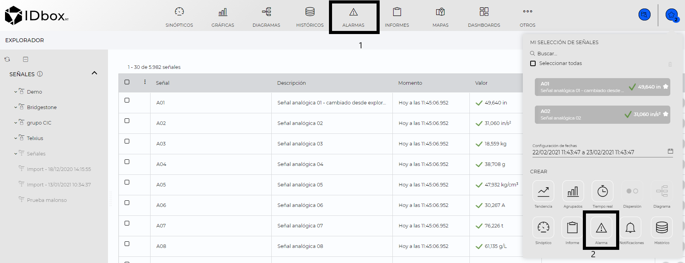
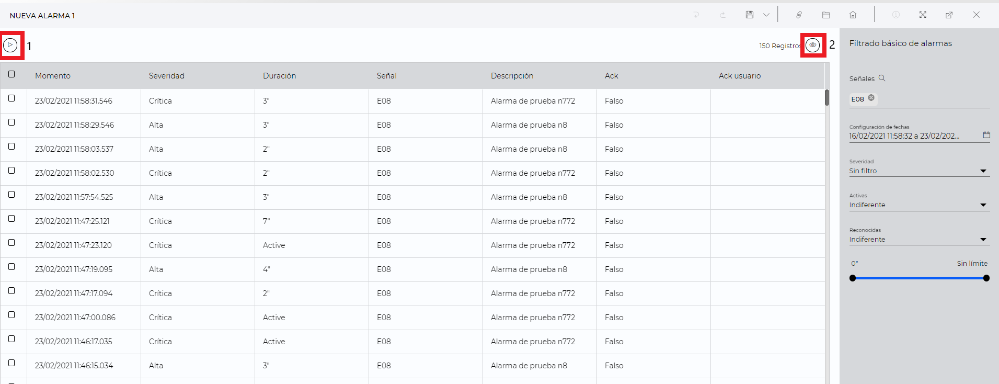
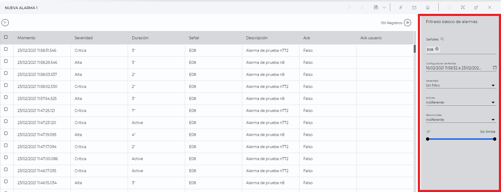

Alarmas
1. Introducción
Desde el documento de alarmas podremos visualizar las alarmas ocurridas en el sistema, permitiendo aplicar un filtrado básico de las alarmas que deseamos visualizar.
Los documentos de alarmas se pueden crear desde desde el lanzador (1) o desde el shortcut (2).

1) Al pulsar en el shortcut de alarmas se abrirá el asistente de creación de un nuevo documento de alarmas, en el cual podremos seleccionar las señales a filtrar y el rango de fechas a visualizar, cabe destacar que para crear un nuevo documento de alamas no es necesario seleccionar ninguna señal, las señales con las cuales creemos el documento de alarmas se aplicarán al filtrado básico, de forma que solo visualizaremos las alarmas de dicha señales.
- Señales Podemos seleccionar las señales sobre las cuales deseamos consultar las alarmas, en caso de que no seleccionemos ninguna señal, se visualizarán las alarmas de todo el sistema.
- Configuración de fechas: Permite seleccionar el intervalo temporal para el que se mostrarán los datos. Se podrán escribir las fechas en el campo de texto o pulsar sobre el calendario (2) para que se abra el selector de fechas.
Establecida la configuración inicial, se mostrará la gráfica configurada en la pantalla. El área central, la representación gráfica se corresponde con la configuración seleccionada previamente tipo de gráfica, fechas y series.
2) Para crear un documento de alarmas desde el lanzador basta con pulsar sobre el icono de alarmas y se creara un nuevo documento de alarmas, al igual que desde el asistente no es obligatorio que seleccionemos alguna señal para crear un documento de alarmas.
Una vez creado el documento de alarmas, En la parte central podremos visualizar el momento, duración, descripción la señal que ha generado la alarma y si ha sido reconocida por algún usuario. En la parte derecha del documento tenemos el panel de filtrado básico que nos permitirá excluir las alarmas a mostrar.

2 Visualización de alarmas.
Desde la visualización de alarmas podemos realizar dos posibles acciones:
1) Iniciar/Pausar tiempo real: Permite parar o reanudar el listado a tiempo real de las alarmas. 2) Reconocer alarmas: Seleccionando uno o varios elementos del listado y haciendo clic en reconocer alamras .Al reconocer la alarma, se activa el campo de reconocimiento (Ack) como “true”,indicando que esta alarma ya ha sido atendida y en el campo de usuario (Ack User) quién reconoció la alarma.

En la tabla de datos se muestran los siguientes campos: 1) Momento: Momento en el que se ha producido la alarma. 2) Severidad: Nive de severidad de la alarma. 3) Duración: Duración de la alarma, en caso de que la alarma siga activa, se mostrará “Active”. 4) Señal: Señal asociada a la alarma. 5) Descripción: Descripción asociada a la configuración de alarma. 6) Ack: Inidica si la alarma ha sido reconocida. 7) Ack usuario: Muestra el usuario que ha reconocido la alarma.
3 Filtrado básico de alarmas
En el panel de filtrado básico de alarmas, podremos establecer una serie de filtros, de manera que solo visualizaremos las alarmas que cumplan con los filtros establecidos.

Disponemos de los siguientes filtros: 1)Señales: Solo visualizaremos las alarmas de señales introducidas, en caso de no haber introducido ninguna señal, se mostrará “Todas las señales” 2)Configuración de fechas: Permite seleccionar el intervalo temporal para el que se mostrarán los datos. Se podrán escribir las fechas en el campo de texto o pulsar sobre el calendario (1) para que se abra el selector de fechas. 3)Severidad: Nivel de severidad que deseamos visualizar, por defecto aparece seleccionado “Sin filtro”, por tanto visualizaremos alarmas con todos los niveles de criticidad. 4)Activas: Indica si deseamos visualizar únicamente las alarmas, activas, desactivadas o ambas. 5)Reconocidas: Indica si deseamos visualizar únicamente las alarmas no reconocidas, pendientes de reconocer o ambas. 6)Duración: Permite la posibilidad de filtrar las alarmas por su duración, indicando una duración mínima y máxima.